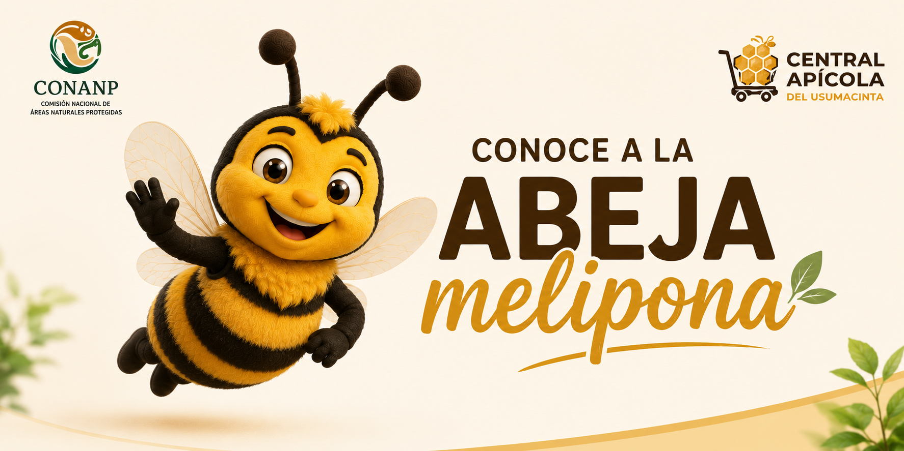
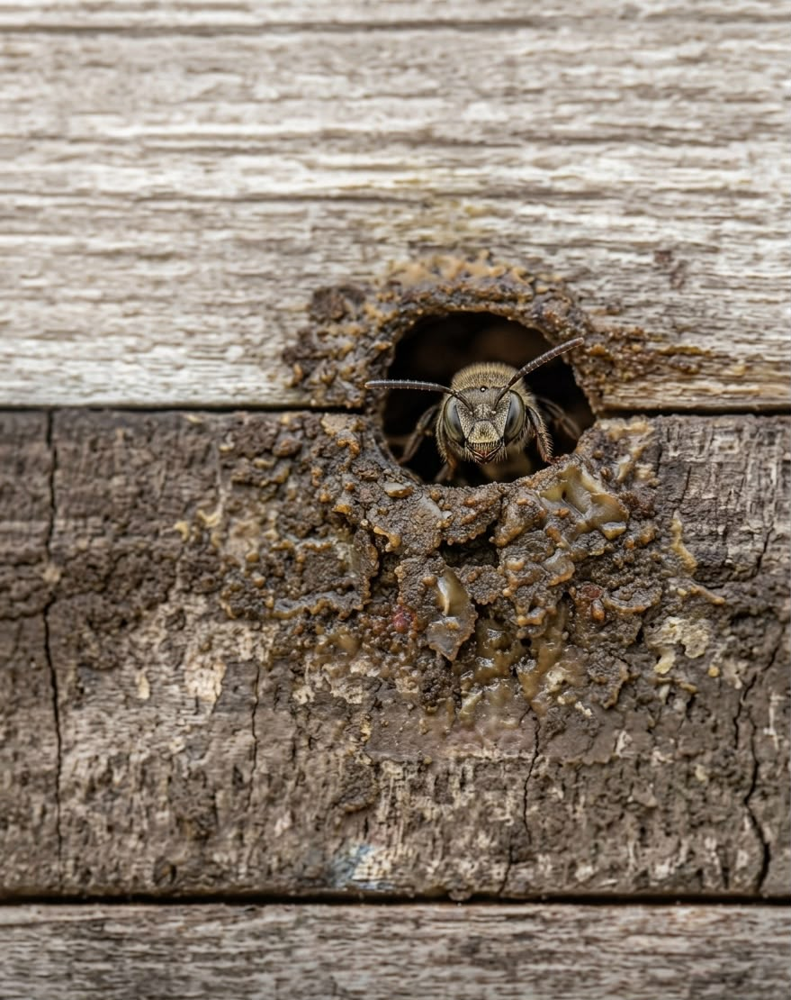
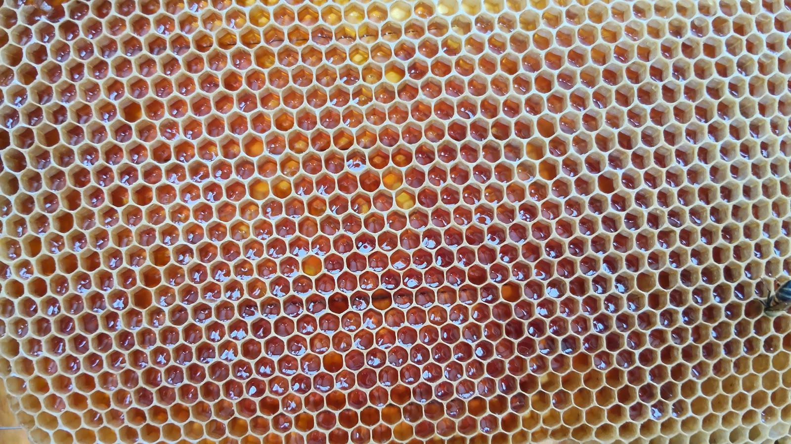
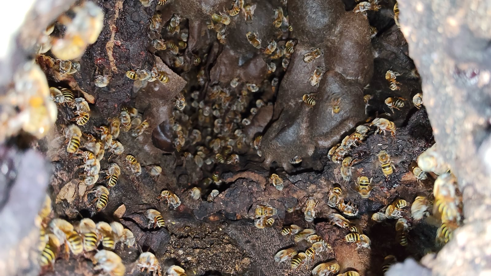
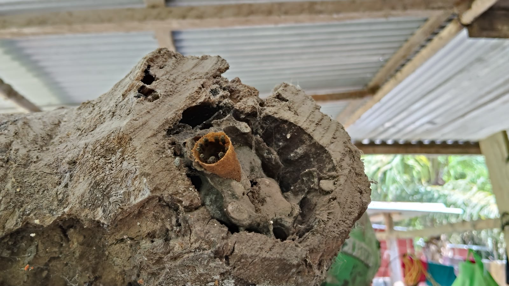

Una de las especies nativas más valiosas del sureste mexicano. Sin aguijón, miel medicinal y guardianas de nuestros bosques tropicales.
Las abejas Meliponinas (conocidas como "abejas sin aguijón") son insectos sociales nativos de América, África y Australia. En el sureste de México, especialmente en Tabasco, han sido criadas por comunidades mayas durante miles de años bajo el nombre de Xunan Kab — "señora abeja" en maya yucateco.
A diferencia de la abeja europea (Apis mellifera), las meliponas no poseen aguijón funcional, lo que las hace ideales para trabajar cerca de comunidades, escuelas y entornos domésticos. Su miel, más líquida y de sabor único, es reconocida por sus propiedades medicinales.







Sin ellas, los bosques tropicales del Usumacinta y la seguridad alimentaria de nuestra región estarían gravemente comprometidos.


El nido de la Melipona se construye en troncos huecos o cavidades naturales. Adentro encontramos una entrada tubular sellada con propóleo (mezcla de resinas y ceras), pequeñas celdillas de cría dispuestas en espiral y recipientes de barro y cera donde almacenan la miel y el polen.
Su miel es más líquida que la de la Apis mellifera, de sabor ácido-dulce con matices florales únicos, y contiene un mayor porcentaje de agua (25–35 %). Esta humedad natural le confiere sus conocidas propiedades antimicrobianas y antiinflamatorias, documentadas en la medicina tradicional maya desde hace siglos.
En la meliponicultura tradicional, las colonias se mantienen en jobones (troncos huecos) o cajas de madera artesanales, y la cosecha se realiza con respeto, sin destruir el nido, extrayendo solo el excedente de miel.
Visita nuestro Centro de rescate o contáctanos si encontraste una colonia de abejas sin aguijón. Las reubicamos y preservamos.